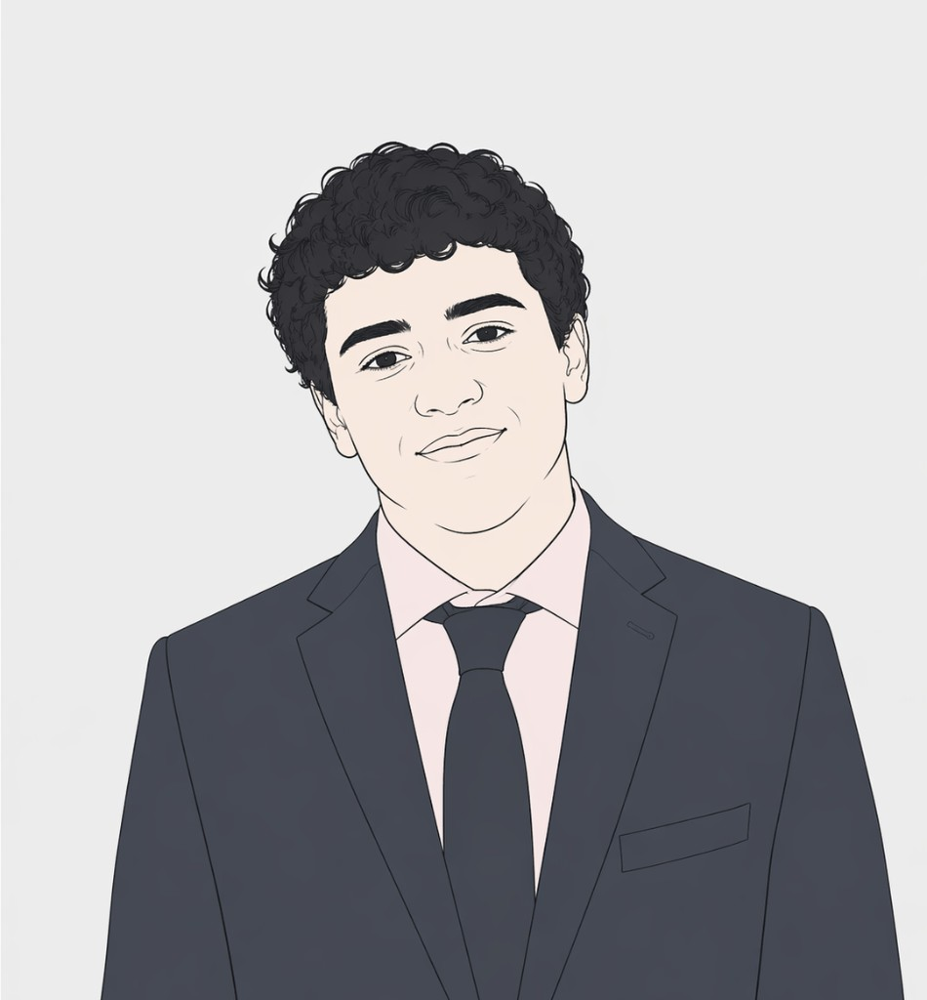
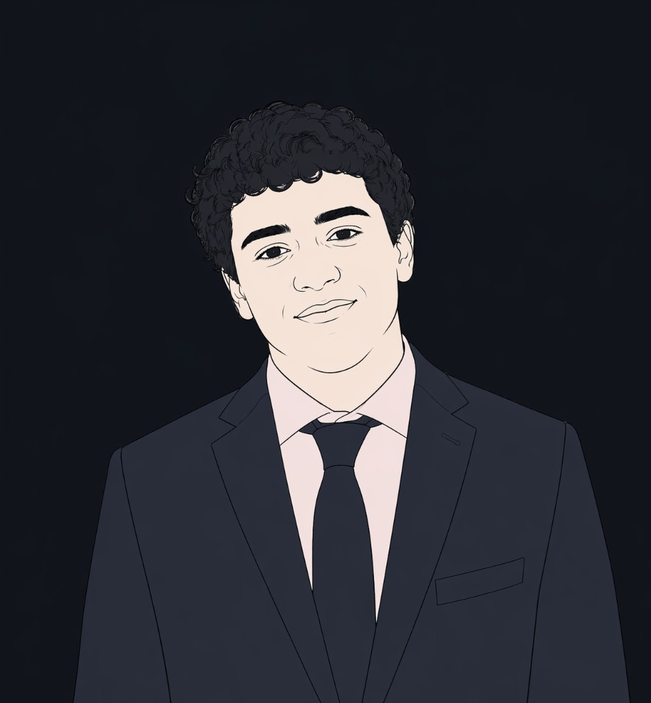

I am a second-year undergraduate at Harvard, concentrating in Mathematics and Statistics with a secondary in Computer Science. I also hope to pursue the concurrent Master’s in Applied Mathematics. I am from Jordan, where I graduated from King’s Academy in 2024 before matriculating at Harvard.
I can only speak to fields I have been exposed to so far, and I expect to continuously update this list. For now, these are the areas I am most interested in:
No AI was used unless stated otherwise.
*Graduate Course